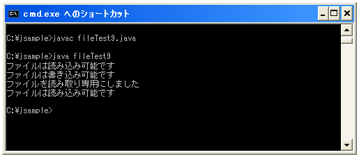
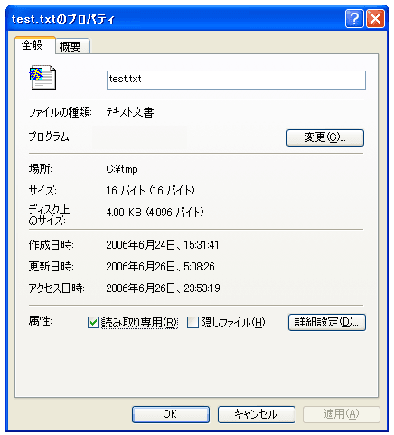

読み込みの許可と書き込みの許可
Windowsの場合ファイルを「読み取り専用」には出来ると思いますけど、見ることも出来ないように出来るかどうかちょっと分かりません。ここではファイルの現在のパーミッション(ファイルに対する読む権限や書く権限などのこと)を確認したり変更したりする方法を見ておきます。
まずは確認する方法です。該当のファイルが読めるかどうかの確認にはFileクラスの"canRead"メソッドを、書き込みが出来るかどうかの確認にはFileクラスの"canWrite"メソッドを使います。
canReadメソッド:
canRead public boolean canRead()
この抽象パス名が示すファイルをアプリケーションが読み込めるかどうかを判定します。
戻り値:
この抽象パス名が示すファイルが存在し、さらにアプリケーションがそれを読み込める場合だけ
true、そうでない場合は false
例外:
SecurityException - セキュリティマネージャが存在し、セキュリティマネージャの
SecurityManager.checkRead(java.lang.String) メソッドがファイルへの読み込みアクセスを許
可しない場合
canWriteメソッド:
canWrite public boolean canWrite()
この抽象パス名が示すファイルをアプリケーションが修正できるかどうかを判定します。
戻り値:
ファイルシステムにこの抽象パス名が示すファイルが実際にあり、さらにアプリケーションがその
ファイルに書き込める場合は true、そうでない場合は false
例外:
SecurityException - セキュリティマネージャが存在し、セキュリティマネージャの
SecurityManager.checkWrite(java.lang.String) メソッドがファイルへの書き込みアクセスを
許可しない場合
どちらのメソッドも、確認したい対象のファイル名を元にFileクラスのオブジェクトを作成し、そのオブジェクトに対して"canRead"メソッドや"canWrite"メソッドを実行します。例えば下記のようになります。
File file = new File("c:\\tmp\\newfile.txt");
if (file.canRead()){
System.out.println("ファイルは読み込み可能です");
}
if (file.canWrite()){
System.out.println("ファイルは書き込み可能です");
}
次に権限を変更する方法です。よく見てみたら「書き込み不可」にするメソッドはありましたが、「読み込み不可」のメソッドはありませんでした。書き込み不可(読み取り専用)にするにはFileクラスで用意されている"setReadOnly"メソッドを使います。
setReadOnly public boolean setReadOnly()
この抽象パス名が示すファイルまたはディレクトリにマークを設定し、読み込みオペレーションだけ
が許可されるようにします。このメソッドを呼び出すと、ファイルまたはディレクトリはそれが削除
されるか、書き込みアクセスを許可するようにマークを設定するまで変更されません。読み取り専用
ファイルまたはディレクトリが削除できるかどうかは、背後のシステムに依存します。
戻り値:
オペレーションが成功した場合は true、そうでない場合は false
例外:
SecurityException - セキュリティマネージャが存在し、セキュリティマネージャの
SecurityManager.checkWrite(java.lang.String) メソッドが指定されたファイルへの書き込み
アクセスを許可しない場合
使い方は今までと同じです。対象のファイル名を元にFileクラスのオブジェクトを作成し、そのオブジェクトに対して"setReadOnly"メソッドを実行します。例えば下記のようになります。
File file = new File("c:\\tmp\\newfile.txt");
if (file.setReadOnly()){
System.out.println("ファイルを読み取り専用にしました");
}else{
System.out.println("読み取り専用に変更が失敗しました");
}
サンプルプログラム
では一度試してみましょう。下記では「読み取り可」「書き込み可」のファイルのパーミッションを調べて、その後「読み取り専用」に変更します。そして改めてパーミッションを調べます。
import java.io.File;
class fileTest9{
public static void main(String args[]){
File file = new File("c:\\tmp\\test.txt");
checkPermission(file);
if (file.setReadOnly()){
System.out.println("ファイルを読み取り専用にしました");
}else{
System.out.println("読み取り専用に変更が失敗しました");
}
checkPermission(file);
}
private static void checkPermission(File file){
if (file.canRead()){
System.out.println("ファイルは読み込み可能です");
}
if (file.canWrite()){
System.out.println("ファイルは書き込み可能です");
}
}
}
上記をコンパイルして実際に実行してみると下記のようになります。

該当のファイルのプロパティを確認してみます。

上記のように「読み取り専用」に設定されています。
( Written by Tatsuo Ikura )

著者 / TATSUO IKURA
初心者～中級者の方を対象としたプログラミング方法や開発環境の構築の解説を行うサイトの運営を行っています。